Contents
Fs = 20000;
newFs = 1000;
lfp(:,1) = downsample(RawSamples,Fs/newFs);
n = 4;
fpass = [1 7; 10 30; 25 45];
for idxBand = 1:3;
[b,a] = butter(n,fpass(idxBand,:)*2/newFs);
lfp(:,idxBand + 1) = filtfilt(b,a,lfp(:,1));
end
row_lfp = zeros(1, (pre+post)*lfp_fs);
lfpTrials = zeros(n_trials, (pre+post)*lfp_fs, odors);
for idxOdor = 1:odors
for idxTrial = 1:10
row_lfp = lfp(floor((sec_on_rsp(idxTrial,idxOdor) - pre)*lfp_fs) : floor((sec_on_rsp(idxTrial,idxOdor) + post)*lfp_fs),1);
row_lfp1 = row_lfp(1:(pre+post)*lfp_fs);
lfpTrials(idxTrial,:,idxOdor) = row_lfp1;
row_lfp = lfp(floor((sec_on_rsp(idxTrial,idxOdor) - pre)*lfp_fs) : floor((sec_on_rsp(idxTrial,idxOdor) + post)*lfp_fs),2);
row_lfp1 = row_lfp(1:(pre+post)*lfp_fs);
lfpThetaTrials(idxTrial,:,idxOdor) = row_lfp1;
row_lfp = lfp(floor((sec_on_rsp(idxTrial,idxOdor) - pre)*lfp_fs) : floor((sec_on_rsp(idxTrial,idxOdor) + post)*lfp_fs),3);
row_lfp1 = row_lfp(1:(pre+post)*lfp_fs);
lfpBetaTrials(idxTrial,:,idxOdor) = row_lfp1;
row_lfp = lfp(floor((sec_on_rsp(idxTrial,idxOdor) - pre)*lfp_fs) : floor((sec_on_rsp(idxTrial,idxOdor) + post)*lfp_fs),4);
row_lfp1 = row_lfp(1:(pre+post)*lfp_fs);
lfpGammaTrials(idxTrial,:,idxOdor) = row_lfp1;
end
end
Warning: Matrix is close to singular or badly scaled. Results may be inaccurate.
RCOND = 1.366884e-16.
shank_unitPairs = [1,5;...
3,3;...
4,3;...
3,2];
odorsRearranged = [1, 8, 2, 9, 3, 10, 4, 11, 5, 12, 6, 13, 7, 14, 15];
spikesMat = [];
spikesPSTHs = [];
idxO = 1;
for idxOdor = 1:odors
for idxTrial = 1:10
for idxPair = 1:length(shank_unitPairs)
idxShank = shank_unitPairs(idxPair,1);
idxUnit = shank_unitPairs(idxPair,2);
spikesMat{idxOdor}(idxPair,:,idxTrial) = shankNowarp(idxShank).cell(idxUnit).odor(idxOdor).spikeMatrixNoWarp(idxTrial,:);
spikesPSTHs{idxOdor}(idxPair,:,idxTrial) = shankNowarp(idxShank).cell(idxUnit).odor(idxOdor).sdf_trialNoWarp(idxTrial,:);
end
end
idxO = idxO + 1;
end
for idxOdor = 1:odors
for idxTrial = 1:10
for idxUnit = 1:length(shank_unitPairs)
rasterUnits(idxOdor).trial(idxTrial).units{idxUnit} = find(spikesMat{idxOdor}(idxUnit,:,idxTrial) > 0);
end
end
end
for idxOdor = 1:length(odorsRearranged)
for idxUnit = 1:length(shank_unitPairs)
for idxTrial = 1:10
rasterUnits(idxOdor).unit(idxUnit).tri{idxTrial} = find(spikesMat{idxOdor}(idxUnit,:,idxTrial) > 0);
end
end
end
0.5 sec
params.Fs=lfp_fs;
params.fpass=[1 50];
params.pad=0;
movingwin=[0.5 0.005];
params.tapers=[5 9];
params.trialave = 0;
params.err = 0;
from = 12;
to = 18;
for idxOdor = 1:15
useOdor = odorsRearranged(idxOdor);
lfpResp = squeeze(lfpTrials(:,from*1000:to*1000,useOdor));
lfpThetaResp = squeeze(lfpThetaTrials(:,from*1000:to*1000,useOdor));
lfpBetaResp = squeeze(lfpBetaTrials(:,from*1000:to*1000,useOdor));
sniff = squeeze(breath(:,from*20000:to*20000,useOdor));
xtime = -3:1/1000:3;
xtimeSniff = -3:1/20000:3;
Xfig = 800;
Yfig = 900;
figure
set(gcf,'Position',[1 5 1440 800]);
set(gcf,'Color','w')
idxPlot = 1;
for idxTrial = 1:10
subplot(10,2,idxPlot)
betaLfp = lfpBetaResp(idxTrial,:);
range = max(betaLfp) - min(betaLfp);
betaLfp = (betaLfp - min(betaLfp)) / range;
range2 = length(shank_unitPairs) - 1;
betaLfp = (betaLfp*range2) + 1;
thetaLfp = lfpThetaResp(idxTrial,:);
range = max(thetaLfp) - min(thetaLfp);
thetaLfp = (thetaLfp - min(thetaLfp)) / range;
range2 = length(shank_unitPairs) - 1;
thetaLfp = (thetaLfp*range2) + 1;
sniffTrace = downsample(sniff(idxTrial,:),20);
range = max(sniffTrace) - min(sniffTrace);
sniffTrace = (sniffTrace - min(sniffTrace)) / range;
range2 = length(shank_unitPairs) - 1;
sniffTrace = (sniffTrace*range2) + 1;
hold on
plot(thetaLfp, 'linewidth', 2);
plot(sniffTrace, 'linewidth', 2);
hold off
axis tight
hold on
xlabel('ms');
ymax = get(gca, 'YLim');
plot([(to - from)/2 (to - from)/2], ymax, 'r', 'linewidth', 1);
hold off
h_ax_lfp = gca;
h_ax_raster = axes('position', get(h_ax_lfp, 'position'));
plotSpikeRaster(rasterUnits(idxOdor).trial(idxTrial).units,'PlotType','scatter','XLimForCell', [from*1000 to*1000]);
set(h_ax_raster, 'YAxisLocation', 'right', 'xlim', get(h_ax_lfp, 'xlim'), 'color', 'none');
set(h_ax_raster,'YTick',[])
set(h_ax_lfp,'YTick',[])
set(h_ax_raster,'YColor','w')
set(h_ax_lfp,'YColor','w')
set(h_ax_raster,'FontName','Arial','Fontsize',10,'FontWeight','normal','TickDir','out','Box','off');
set(h_ax_lfp,'XTick',[])
idxPlot = idxPlot + 1;
[S1,t,f]=mtspecgramc(lfpResp(idxTrial,:)', movingwin, params);
subplot(10,2,idxPlot)
plot_matrix(S1,t,f);
xlabel([]);
idxPlot = idxPlot + 1;
end
suptitle(listOdors(idxOdor))
end
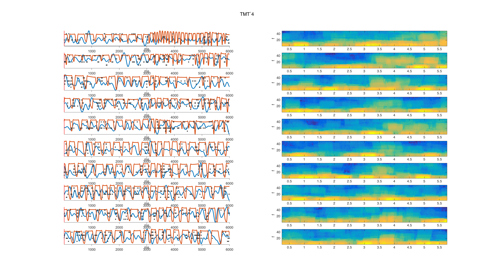 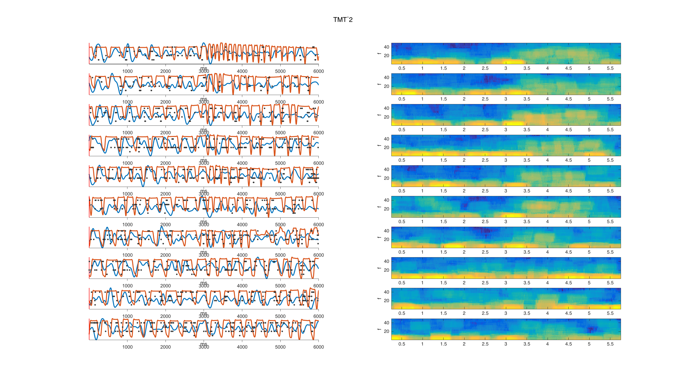 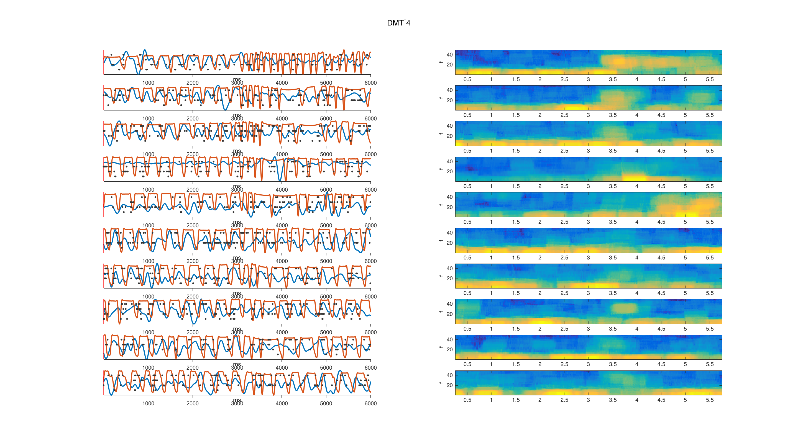 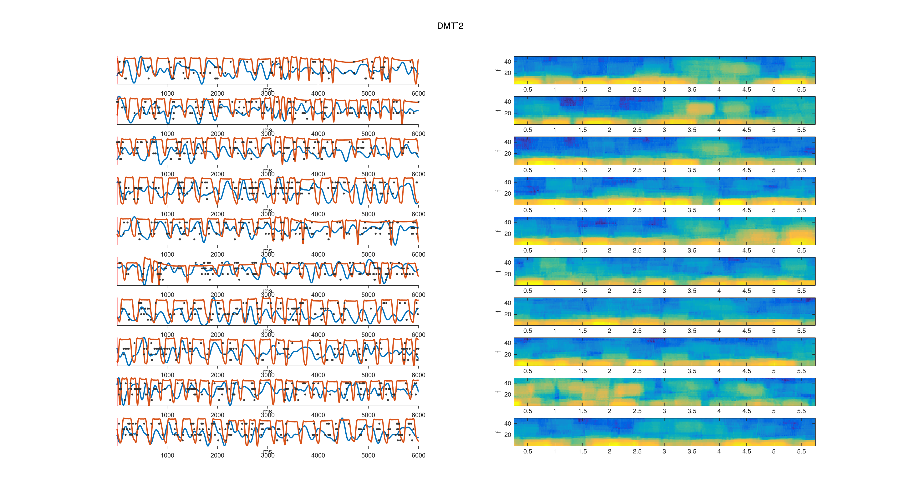 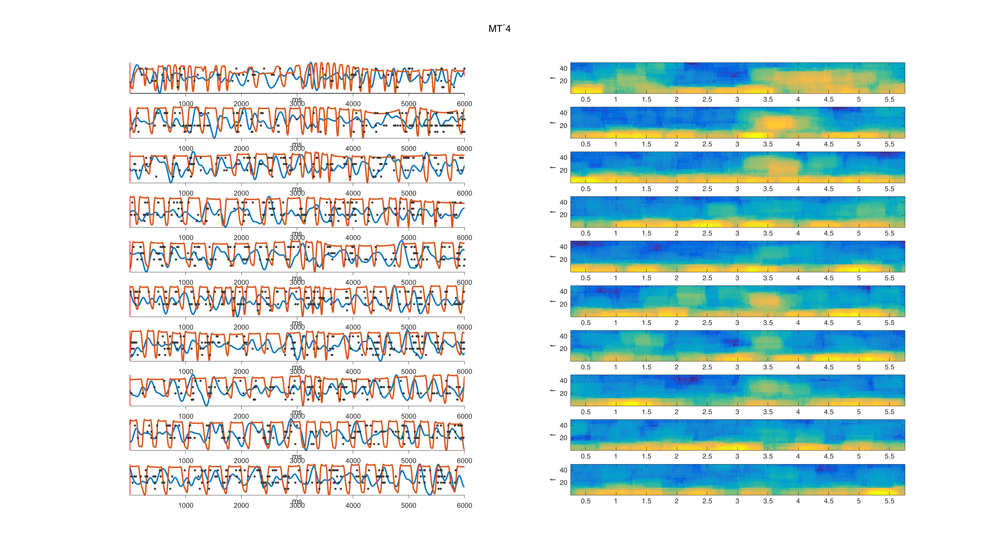 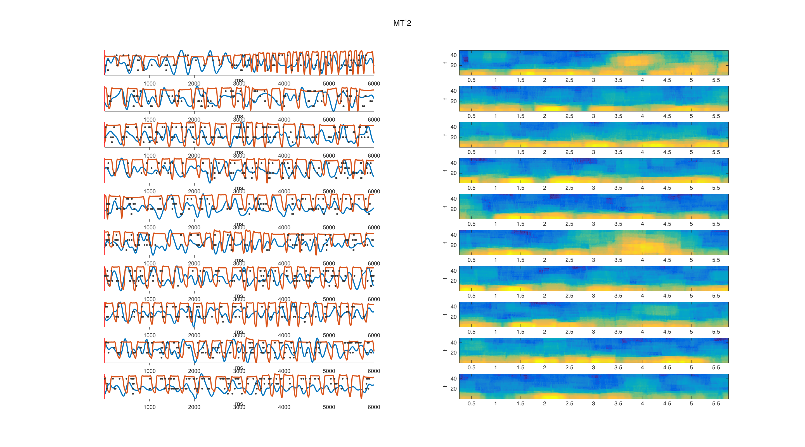 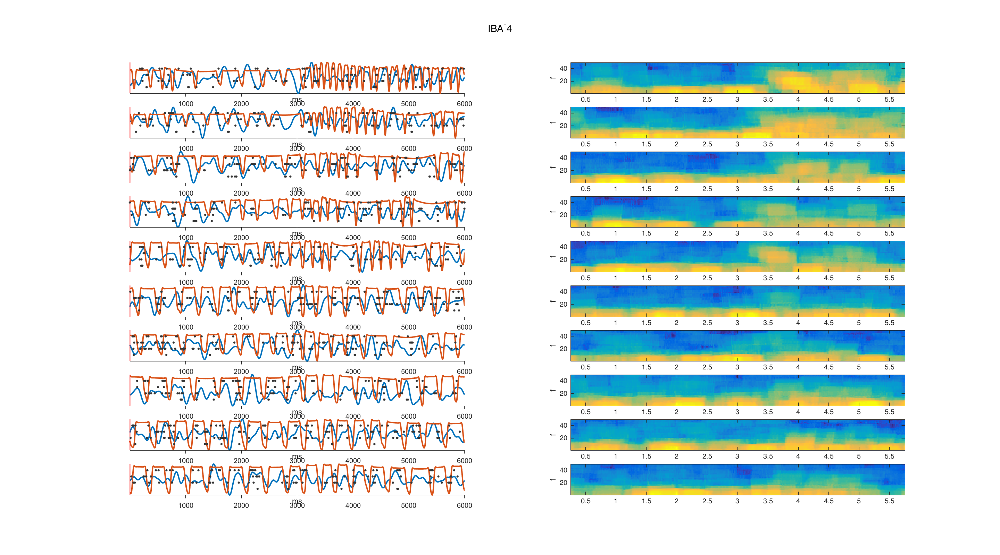 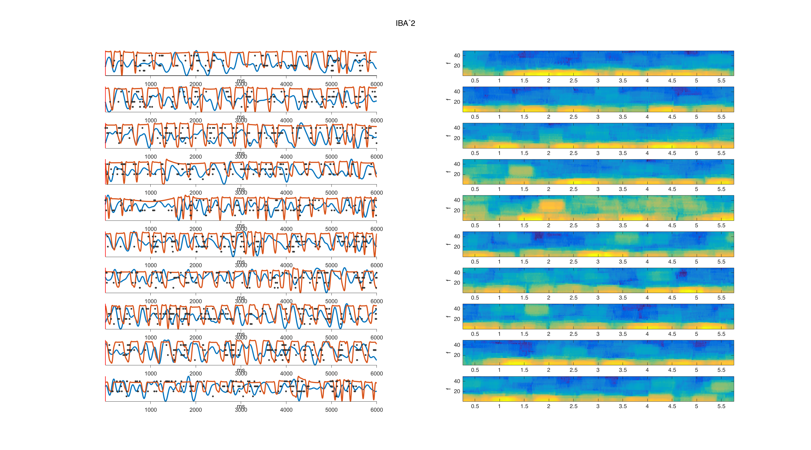 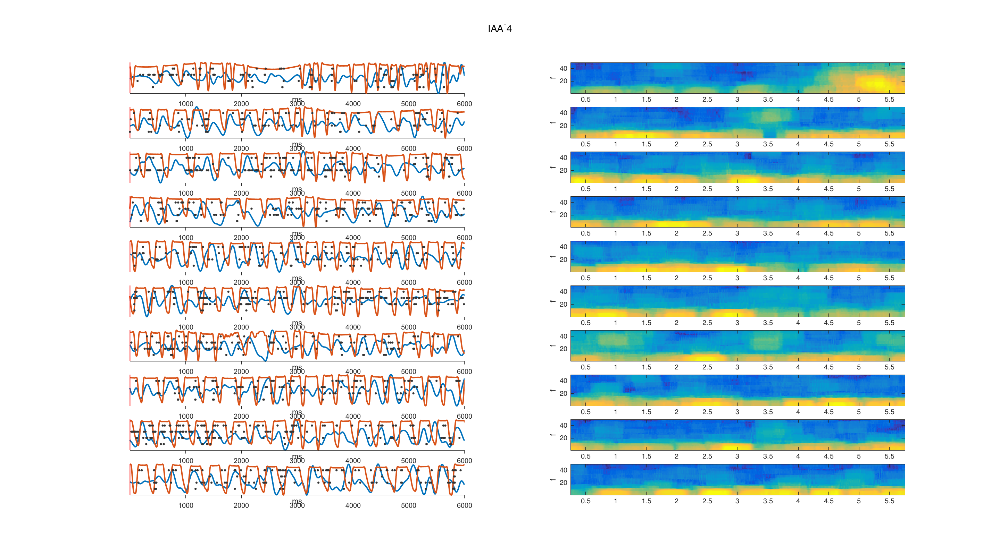 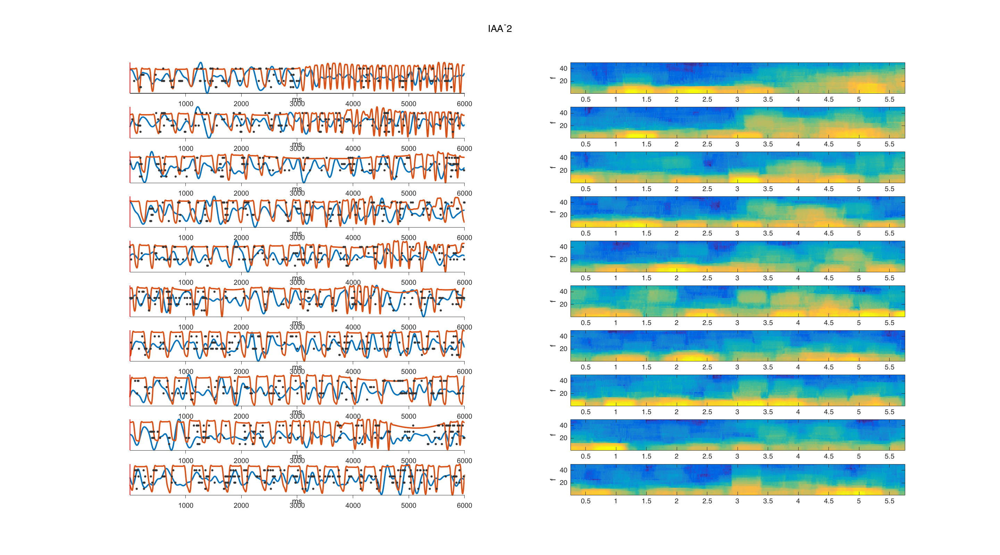 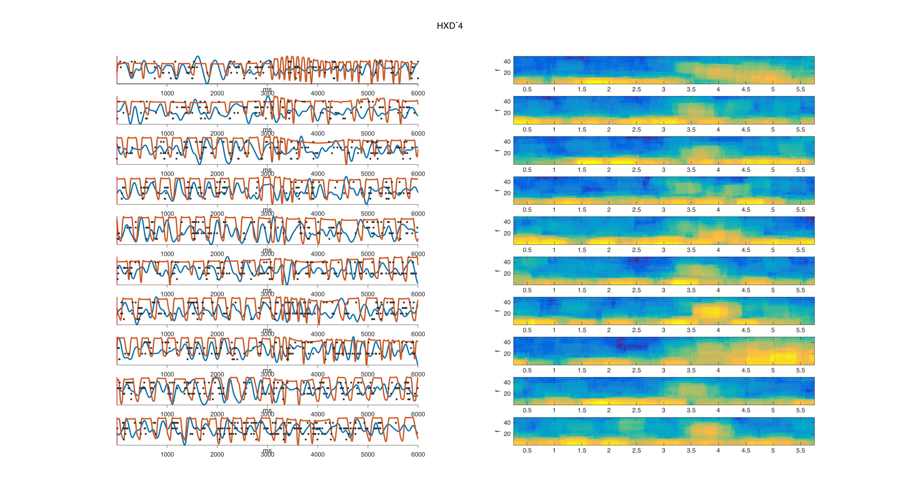 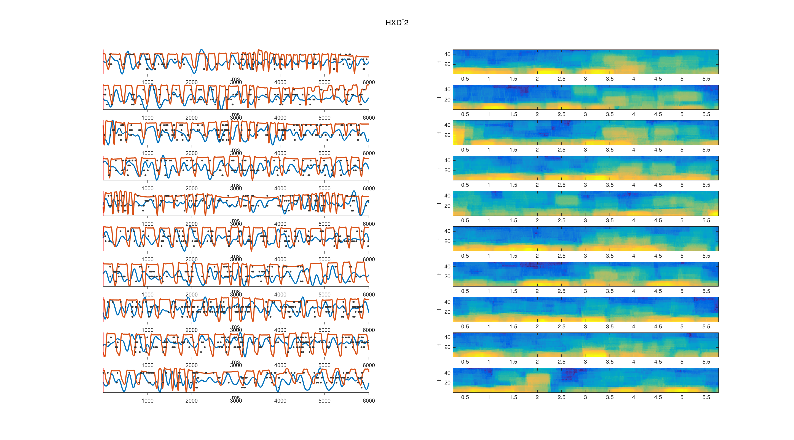 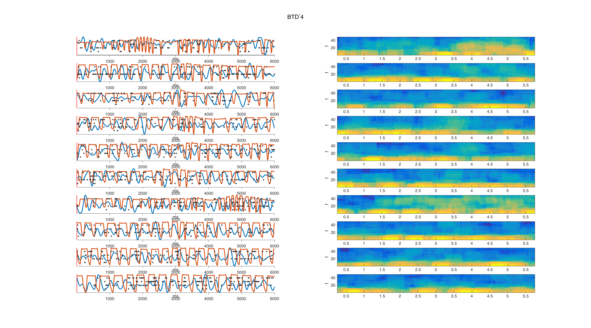 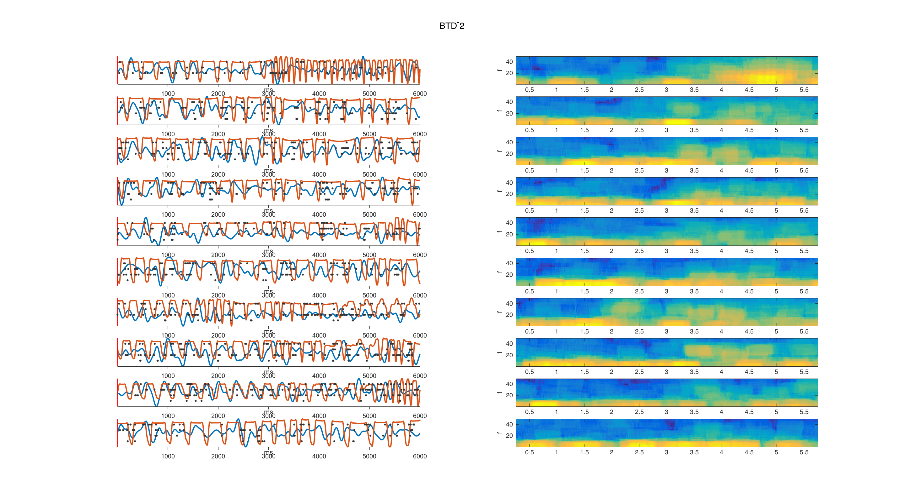 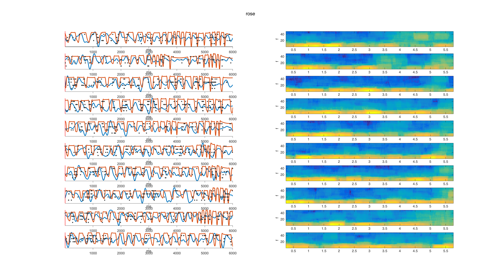
listOdors = {'TMT^-4', 'TMT^-2', 'DMT^-4', 'DMT^-2', 'MT^-4', 'MT^-2',...
'IBA^-4', 'IBA^-2', 'IAA^-4', 'IAA^-2', 'HXD^-4', 'HXD^-2', 'BTD^-4', 'BTD^-2', 'rose'};
from = 12;
to = 18;
params.Fs=lfp_fs;
params.fpass=[1 50];
params.pad=0;
movingwin=[0.5 0.005];
params.tapers=[5 9];
params.trialave = 1;
params.err = 0;
for idxUnit = 1:length(shank_unitPairs)
xtimeSniff = -3:1/20000:3;
Xfig = 800;
Yfig = 900;
figure
set(gcf,'Position',[1 5 1440 800]);
set(gcf,'Color','w')
idxPlot = 1;
p = panel();
p.pack('h',{50 50});
p(1).pack('v', {1/15 1/15 1/15 1/15 1/15 ...
1/15 1/15 1/15 1/15 1/15 ...
1/15 1/15 1/15 1/15 1/15});
p(2).pack('v', {1/15 1/15 1/15 1/15 1/15 ...
1/15 1/15 1/15 1/15 1/15 ...
1/15 1/15 1/15 1/15 1/15});
for idxOdor = 1:15
useOdor = odorsRearranged(idxOdor);
p(1,idxOdor).select()
plotSpikeRaster(rasterUnits(idxOdor).unit(idxUnit).tri,'PlotType','vertline', 'VertSpikeHeight', 1,'XLimForCell', [from*1000 to*1000]);
hold on
for idxCell = 1:length(shank_unitPairs)
plot([1 (to-from)*1000], [idxCell idxCell], 'k');
end
hold off
ylabel(listOdors(idxOdor))
idxPlot = idxPlot + 1;
p(2,idxOdor).select()
lfpResp = squeeze(lfpTrials(:,from*1000:to*1000,useOdor));
[S1,t,f]=mtspecgramc(lfpResp', movingwin, params);
plot_matrix(S1,t,f);
xlabel([]);
idxPlot = idxPlot + 1;
end
p.de.margin = 2;
p.margin = [8 6 4 6];
p(2).marginleft = 30;
p.select('all');
end
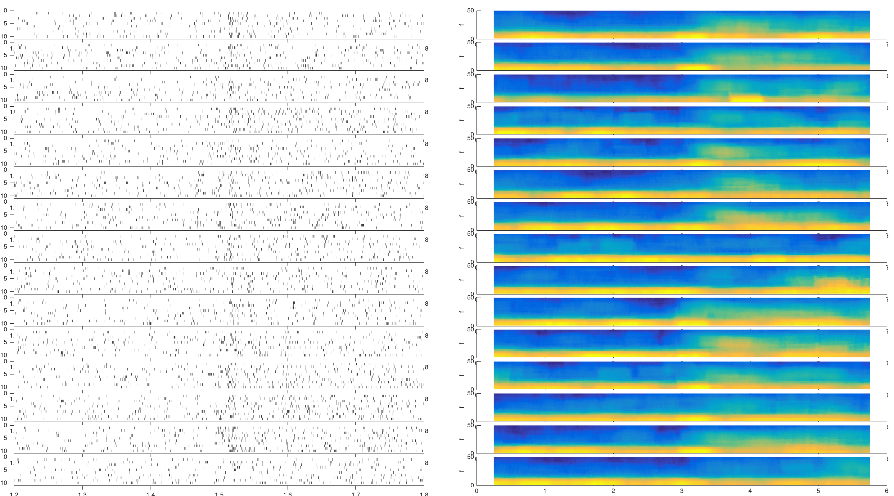 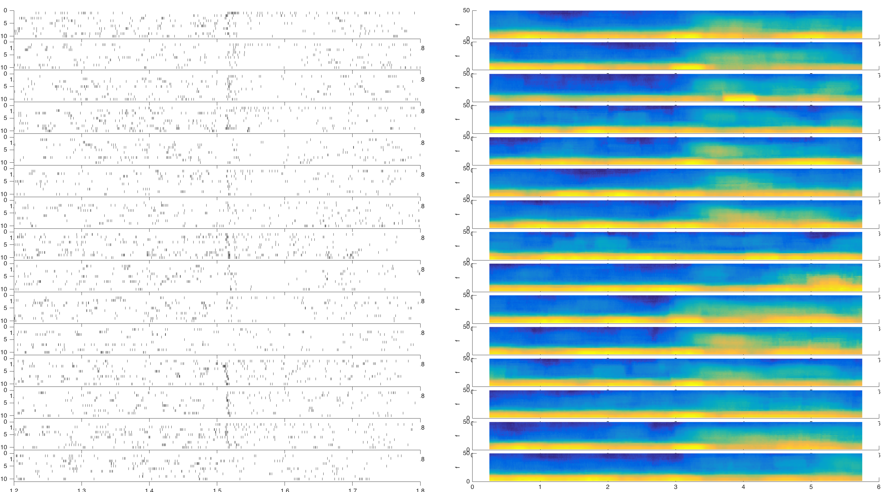 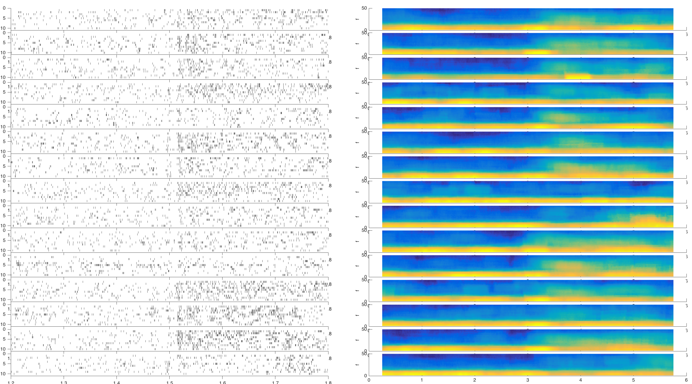 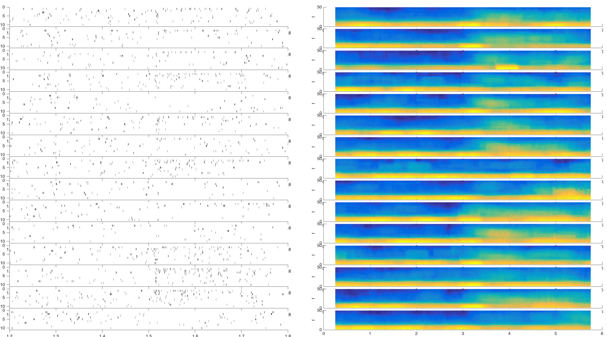